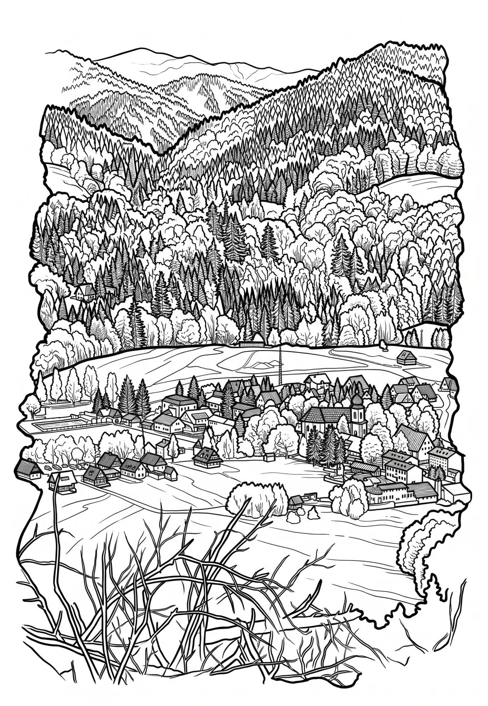

Deštné v Orlických horách
Královéhradecký kraj · 650 m n. m.

město · #013
Deštné v Orlických horách (v letech 1921–1980 Deštné, německy Deschnei im Adlergebirge) je obec v okrese Rychnov nad Kněžnou v Královéhradeckém kraji. Leží osmnáct kilometrů severně od Rychnova nad Kněžnou a čtyřicet kilometrů východně od Hradce Králové. Žije zde 550 obyvatel (v roce 2006 jich bylo 625). Průměrná nadmořská výška obce je 650 metrů.